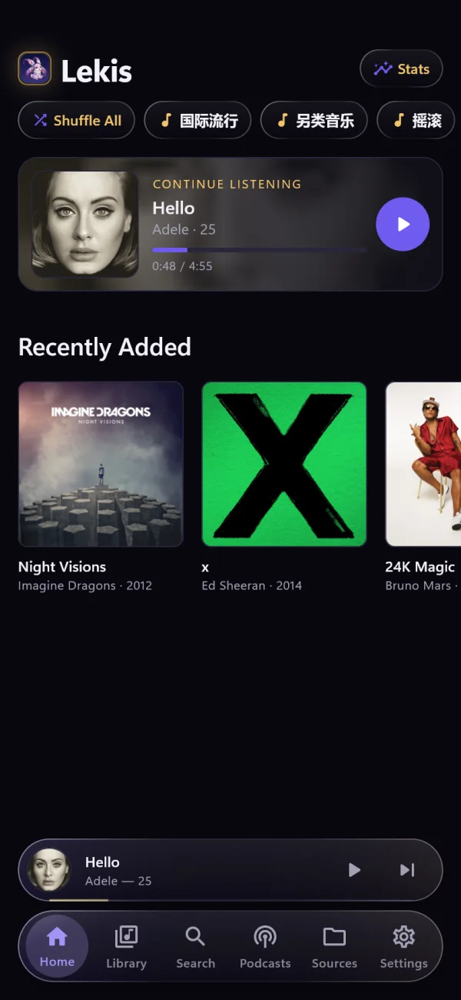

你的音乐在哪？
从一个文件夹开始，也可以连接服务器，或单独安装在线音源。选择一种，查看接入方法。

本地文件夹
进入「音源」，点「添加音源」，选择本地文件夹。选中音乐所在的目录并授予读取权限。扫描完成后，在「资料库」里按专辑浏览。
NAS 与媒体服务器
在「添加音源」中选择连接方式。共享文件夹可用 SMB、WebDAV 等协议；已有 Navidrome、Jellyfin 或 Plex 的用户可以直接登录服务器。保存后开始扫描。
在线音源 · Bilibili
安装后可以听 B 站公开视频的音频。插件和插件目录均由社区第三方制作和维护，不是月兔音乐官方提供，也与月兔音乐及哔哩哔哩等内容权益方没有任何隶属、合作或背书关系；插件的内容与服务由插件作者和相应权益方负责。
从社区插件库安装
- 在带默认社区插件库的版本中，打开「设置 → 高级 → 插件」，也可以从「添加音源 → 导入在线音源」进入。
- 点「浏览插件目录」，找到 Bilibili，选择「下载并安装」。核对版本和下载地址后确认安装。
- 确认 Bilibili 已启用。打开「搜索」，将搜索范围切到 Bilibili，输入歌名、BV 号或视频链接。
离线安装或使用旧版
插件库暂时打不开，或旧版只有 ZIP 入口时，下载下方压缩包。在「插件」页点「从 .zip 安装」，直接选择 ZIP，再启用 Bilibili。旧版需支持 MyGo 音源插件；缺少这项支持时，请先更新到兼容版本。
下载月兔音乐
在作者的 GitHub 发布页选择适合设备的安装包。
前往下载页
Android · Windows · macOS · Linux